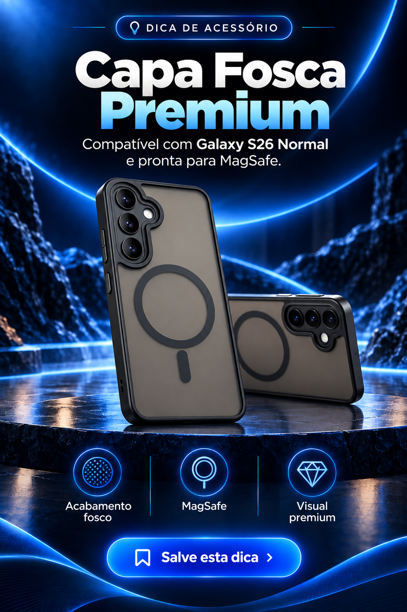

Setup Home Office
Capa magnética fosca para Galaxy S26: vale a pena?
A capa fosca magnética para Galaxy S26 oferece visual discreto, melhor pegada e conexão com acessórios compatíveis. Confirme o modelo exato, a proteção das câmeras e a força do ímã antes de comprar.
Pontos principais
- Acabamento fosco
- Encaixe magnético
- Proteção diária
Confirme preço, modelo, medidas, garantia e itens incluídos diretamente no anúncio.
Veja a compatibilidadePublicidade: esta página pode conter link de afiliado.